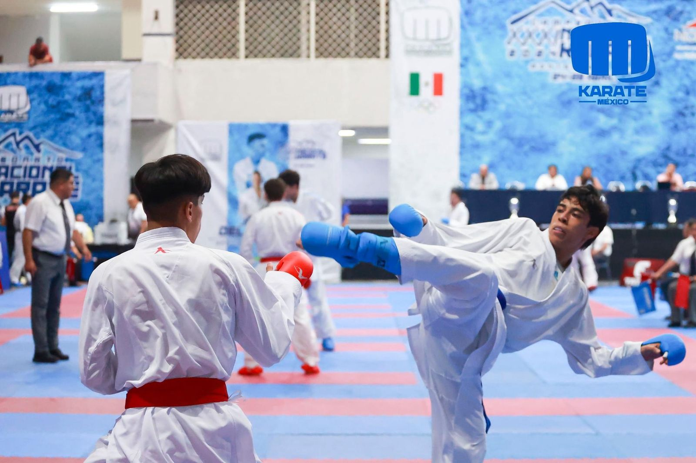

Ivan
Soy un atleta de alto rendimiento con 17 años de edad, multimedallista nacional en Juegos Nacionales Conade con experienciainternacional obteniendo el bronce en el Campeonato Centroamericano y del Caribe;Me han tomado en consideracion para ser el rostro de karate en Jalisco por mi gran desempeño.
El kumite es una parte funfdamental del Karate Do que implica el combate entre dos practicantes.Se traduce como un intercambio de tecnicas y es una forma de aplicar lastecnicas aprendidas en un entorno realista, desarrollando habilidades como el sentido de oportunidad, distancia, y reaccion ante los atques contrarios.
El Kata es una forma preestablecida de movimientos en el Karate Do, que simula un combate contra multiples oponentes imaginarios.Se practica individualmente y su objetivo es mejorar la tecnica, la discplina y la concentracion.Los katas incluyen una variedad de tecnicas como golpes,bloqueos, y patadas realizadas con presencion y control.
Los combates de kumite se realizan en un tatami de 8m x 8m con una zona de seguridad adicional.Las tecnicas se clasifican en Yuko(1 punto), Waza-ari(2 puntos), e Ippon(3 puntos).Estan prohibidos los golpes a zonas peligrosas como la garganta y los derribos peligrosos.Los competidores deben usar guantes,protector bucal,y protectores de tibia y pie homologado por la WKF.
